114 年學科能力測驗社會試題與答案
這一頁是民國 114 年學科能力測驗社會的整份歷屆試題，共 64 題，題目與標準答案出自大考中心 學測歷年試題（依著作權法 §9，考試試題不受著作權保護），其中 64 題附有詳解。以下逐題列出題幹、選項與答案；要計時作答或記錄成績，請用線上練習。
線上作答這一科 →
全部 64 題
第 1 題
小文發現讀國小的妹妹會講幾句越南文，有點羨慕，詢問後得知學校新開設東南亞移民母語課。小文跟公民老師討論此項義務教育課程改變的用意，若老師欲以目標相近的政策解說，下列何者最適當？
- （A）公家機關與道路應設雙語標示以建置國際友善環境
- （B）法院為語言不通的外籍刑事被告提供司法通譯協助
- （C）客家電視台法制化納入公共電視體系由公部門預算經營
- （D）新建公共建築電梯須設置視障者所需點字版始核發建照
答案：（C）
詳解與考點
正解：題幹關鍵是東南亞移民母語課的用意，在於以教育維護新住民的語言與文化認同，而非只提供便利服務。C：客家電視台法制化納入公共電視體系並由公部門預算經營，同樣以公共資源保障特定族群的語言文化傳播，目標最接近，故 C 為正解。
A：公家機關與道路設雙語標示，主要是建置國際友善環境，服務對象不限於特定少數族群的文化傳承，A 錯誤。
B：法院提供司法通譯，是保障語言不通者的程序權利與公平審判，不是維護族群語言文化認同，B 錯誤。
D：電梯設置視障者所需點字版，是無障礙環境與身心障礙權益保障，與族群語言文化保障不同，D 錯誤。
本題考點：多元文化教育與少數族群語言保障——政府以課程、媒體等公共資源維護特定族群的語言文化認同；政策比對判準——先辨識政策保障的是文化認同、程序權利、國際便利或無障礙需求，再比較目標是否相同。
第 2 題
某國最近爆發食安問題，輿論認為主管機關管理監督不周，嚴重失職，強烈要求主責的閣揆應該下台。依據我國政府體制，若上述事件發生在我國，國會可行使下列何項職權加以課責？
- （A）質詢與調查後對該首長提出罷免案
- （B）凍結行政預算並重新任命行政首長
- （C）對該首長進行失職調查並提出彈劾
- （D）對失職的行政首長提出不信任投票
答案：（D）
詳解與考點
正解：題幹的「閣揆」是行政院長，問國會如何課責，應對應立法院對行政院長的不信任案。D：立法院可對行政院長提出不信任案，以政治責任機制要求失職閣揆去職，故為正解。
A：罷免是針對民選公職人員的制度，立法院不能對行政院長提出罷免案。
B：立法院雖可審議預算，卻沒有重新任命行政院長的權力。
C：彈劾屬監察院職權，不是立法院課責行政院長的方式。
本題考點：我國權力制衡——立法院對行政院長的核心政治課責工具是不信任案；職權辨析——罷免對民選公職、彈劾由監察院行使、行政院長任命不屬立法院權限。
第 3 題
某國實施不在籍投票，讓無法返回戶籍地的選民，可透過網路投票。表 1 是該國實施這項制度前、後的相關統計資料。依據表 1，若不考慮該國其他情況，上述制度實施後，對於選民投票參與的影響，下列推論何者最合理？
表 1| 比較項目 | 實施前 | 實施後 |
|---|
| 候選人總數 | 324 人 | 400 人 |
| 實際投票人數 | 1200 萬 | 1400 萬 |
| 選民總投票率 | 60% | 70% |
- （A）不在籍投票明顯提升選務工作效率，使選民更願意參與投票
- （B）科技進步增加選民投票的便利性，有助於選民表達政治意志
- （C）不在籍投票有助於年輕世代參與選舉，使選民總投票率增加
- （D）實際投票人數增加，顯示社會大眾對民主運作的滿意度提升
答案：（B）
詳解與考點
正解：題幹限定「依據表1」且不考慮其他情況，判斷時只能使用表中制度實施前後的投票參與變化，再扣合無法返回戶籍地者可透過網路投票的制度設計。科技增加投票便利性，有助選民表達政治意志，B 最符合表1所能支持的推論，故 B 為正解。
A：表1比較的是投票參與情形，不能據此推論選務工作效率提升，A 錯誤。
C：表中沒有選民年齡結構或年輕世代投票率，不能把整體變化歸因於年輕世代，C 錯誤。它看起來對，是因為不在籍投票可能便利異地求學或工作的年輕人，但題目要求依表判讀，不能補入未提供的年齡資料。
D：實際投票人數增加只能說明參與情形改變，無法直接證明大眾對民主運作的滿意度提升，D 錯誤。
本題考點：政治參與與統計資料判讀——比較制度實施前後資料時，只能推論表格直接支持的關聯；因果推論判準——未提供年齡、效率或態度資料，就不得把投票參與變化歸因於這些因素。
第 4 題
某學者撰寫一篇關於推動薪資透明化的論文，主張勞動部應積極推動修法，強化對企業及雇主揭露招聘員工薪資的規範，要求薪資未達一定金額的職缺，其招聘公告不能註明「薪資面議」，必須公開薪資範圍，否則即可依法開罰。該學者的論文最可能探討下列哪項法律議題？
- （A）國家權力行使與可課責性
- （B）勞動法規與權利平等議題
- （C）刑罰謙抑及其最後手段性
- （D）私法自治的範圍及其限制
答案：（D）
詳解與考點
正解：題幹核心是以法律要求雇主公開薪資範圍，限制勞動契約雙方原可自行議定薪資的空間。D：這正是私法自治在勞動關係中受公法規範限制的議題，故為正解。
A：國家權力的可課責性著重公權力行使後如何受監督、追究，非本題重點。
B：題目雖涉及勞動法規，但未以平等權或差別待遇為論證核心；最直接的爭點是契約自由的限制。
C：刑罰謙抑討論刑法作為最後手段的界線；題幹是行政管制與裁罰，性質不同。
本題考點：私法自治與公法管制——先找被限制的私人決定事項；勞動契約的薪資約定雖屬私法自治，仍可能為保障勞工而受法律強制規範。
第 5 題
甲和乙兩人在溪邊戲水，乙不慎落水，甲會游泳但見溪流湍急未下水救援，後乙不幸溺斃。恰巧有路人在高處錄下影片上傳網路，引發輿論一片譁然，並要求檢察官起訴甲。也有部分網民主張修法，將此種行為入罪化。依刑法基本原則判斷，偵辦此案的檢察官最可能如何判定是否起訴？
- （A）依從舊原則，僅能依現行法律辦理起訴事宜
- （B）因犯行明確，可逕行起訴甲再啟動修法程序
- （C）因犯行明確，故可以類推適用類似法條起訴
- （D）依罪刑法定，須依據新修正的法律來起訴甲某國外藝文團體收取高價酬勞（甲）來臺演出，不僅帶動國內購票風潮，更吸引國外
答案：（A）
詳解與考點
正解：題幹的關鍵是甲未下水救援時，現行法律尚未將此不作為救助入罪；依罪刑法定主義，是否起訴須以行為時有效的法律為準。A：檢察官僅能依現行法律辦理起訴事宜，故為正解。
B：即使社會輿論認為犯行明確，也不能在欠缺法律依據時先起訴、再修法，錯誤。
C：刑法不得以類推適用擴張處罰範圍，不能援引類似法條起訴，錯誤。它看起來對，是因為行為在道德上可能受責難，但刑事責任仍須有明確法律依據。
D：修法後的新法原則上不溯及既往，不能用新修正法律起訴修法前的行為，錯誤。
本題考點：罪刑法定主義——行為是否可罰，以行為時有效法律為依據；禁止類推與不溯及既往——不得以類似法條或嗣後制定的刑罰法律追訴舊行為。
第 6 題
粉絲來臺追星與觀光（乙），黃牛票也因此大賣（丙），連該團體帶來給觀眾的紀念品，也發送一空（丁）。上述四項事件何者最可能直接增加當年度臺灣的 GDP？
- （A）甲
- （B）乙
- （C）丙
- （D）丁某生撰寫〈在「他鄉」成為「原住民」〉一文的摘要時寫到：此族群的名稱曾是地名
答案：（B）
詳解與考點
正解：題幹問「直接增加當年度臺灣 GDP」，應選當年度在臺灣境內新生產的最終財貨或勞務。B：粉絲來臺追星與觀光所支付的住宿、餐飲、交通等費用，是在臺灣境內提供的服務，也屬服務輸出，會直接增加臺灣 GDP，故 B 為正解。
A：原題甲事件為外國藝文團體取得並匯出酬勞；款項匯出本身不是臺灣境內新生產的最終財貨或勞務，不能據此直接增加臺灣 GDP，錯誤。
C：黃牛票轉售主要是既有票券的再次交易與價差，沒有新生產最終財貨或勞務，錯誤。
D：隨團自國外帶來並免費發送的紀念品，不是當年度在臺灣境內生產，錯誤。
本題考點：GDP——計算一國境內、當年度新生產的最終財貨與勞務；判準是外國旅客在境內消費屬服務輸出，可增加本國 GDP，而既有票券轉售不新增產值。
第 7 題
雅化後的行政區名，因原鄉土地流失而在十九世紀遷入花蓮平原。後因新開地爭奪與清軍衝突，發生加禮宛戰役，失敗後被迫流離分散，多數族人移居東海岸，與阿美族混居，但仍保有其傳統文化。後此族群發起正名運動並成功，但原鄉許多族人受限法令，未能取得原住民族身分。此族群為：
- （A）布農族
- （B）太魯閣族
- （C）噶瑪蘭族
- （D）西拉雅族教育政策的制定往往與國家的政經局勢息息相關，戰後臺灣教育政策依序有：滌除日本
答案：（C）
詳解與考點
正解：題幹的加禮宛戰役、十九世紀遷入花蓮平原、戰後移居東海岸並與阿美族混居，以及正名運動，都是噶瑪蘭族的關鍵線索。C：噶瑪蘭族原鄉地名曾雅化為行政區名，戰役失敗後族人流散東海岸，故為正解。
A：布農族主要分布於中央山脈，沒有題幹所指的加禮宛戰役與花蓮遷移脈絡。
B：太魯閣族雖於 2004 年完成正名，但其歷史遷徙與加禮宛戰役不符。
D：西拉雅族主要在西南平原，非花蓮平原與東海岸的族群。
本題考點：臺灣原住民族史——以戰役、遷徙地與正名歷程交叉辨識族群；線索收斂——同時吻合加禮宛戰役與東海岸混居者為噶瑪蘭族。
第 8 題
文化思想、戡亂建國、提升國民素質以及教育鬆綁、尊重多元等面向，而與之配合的作法包括：（甲）強化軍事訓練與政治教育；（乙）實施九年國民義務教育；（丙）推行國語教育；（丁）推動大學自治。上述甲、乙、丙、丁出現的順序應為：
- （A）甲乙丙丁
- （B）甲丙乙丁
- （C）丙乙丁甲
- （D）丙甲乙丁
答案：（D）
詳解與考點
正解：題幹要求按戰後臺灣教育政策的年代排序，應以各措施首次推行時間判斷。D：推行國語教育在 1945 年接收後最早；強化軍事訓練與政治教育配合 1950 年代戡亂體制；九年國民義務教育於 1968 年實施；大學自治在 1994 年《大學法》修正後推動，順序為丙甲乙丁，故選 D。
A：甲乙丙丁把 1945 年後即推行的國語教育排到九年國教之後，年代倒置。
B：甲丙乙丁把 1950 年代的軍訓與政治教育排在 1945 年國語教育之前。
C：丙乙丁甲把 1950 年代的軍訓與政治教育放到 1994 年大學自治之後，明顯不合年代。
本題考點：戰後教育政策年代序——1945 年國語教育、1950 年代軍訓政治教育、1968 年九年國教、1994 年後大學自治；排序題操作——先標出每項措施的年代，再依時間由早至晚排列。
第 9 題
中國古代國家從封建制轉化為郡縣制的過程中，統治者控制和掌握人民的方式也出現變革，並形成新的社會型態，此變化最重要的意義是：
- （A）編製戶籍成為統治者動員人力的主要依據
- （B）頒布法律成為統治者建構權威的主要途徑
- （C）徵收賦役是消弭社會貧富不均的主要作法
- （D）計口授田是提高社會勞動生產的主要措施
答案：（A）
詳解與考點
正解：題幹關鍵是中國古代由封建制轉為郡縣制，統治者改為直接控制人民；此種統治型態須先掌握人口，編製戶籍即可作為徵兵、收稅與動員人力的依據。A 最能說明此變革的意義，故 A 為正解。
B：法律在郡縣制以前已存在，頒布法律不是由封建轉為郡縣後才出現的新統治意義，B 錯誤。
C：徵收賦役的目的在取得國家所需的人力與資源，不是消弭社會貧富不均，C 錯誤。
D：計口授田是北魏以後均田制的措施，非郡縣制形成時的核心統治方式，D 錯誤。
本題考點：郡縣制的統治型態——由分封貴族轉為中央直接管轄人民；戶籍管理判準——國家若須徵兵、課稅與動員，先以戶籍掌握人口。
第 10 題
一位史家認為：在啟蒙運動中，重要的思想家通常出身貴族，或者與貴族有密切聯繫，很少挑戰當時的政治與社會秩序。這位史家還發現在 1780 年代法國大革命前的暢銷書，多是一些八卦式的虛構文學，主題如「教宗的私生子」、「皇后的奢靡生活」等。這些作者透過撰寫捏造上流人士醜聞的小冊來養活自己並抒發心中的苦悶。從上文可知，史家認為這類暢銷書與法國大革命之間的關係最可能是：
- （A）啟發人民以爭取民主自由
- （B）打擊了王室與教會的權威
- （C）敵國為顛覆法國故予支持
- （D）為了賺錢以支持革命運動
答案：（B）
詳解與考點
正解：題幹所述小冊散播教宗私生子、皇后奢靡等上流醜聞，關鍵影響是侵蝕既有權威，而非提出革命理論。B：捏造醜聞會損害王室與教會的威信和神聖性，因而與法國大革命前的輿論轉變有關，故 B 為正解。
A：這類八卦式虛構文學不是宣揚民主自由的啟蒙論述。
C：題文未提敵國資助或顛覆法國的證據。
D：作者以寫作養活自己，賺錢是個人目的，不表示收入用於支持革命。
本題考點：革命前輿論——攻擊統治者與教會的醜聞可削弱其正當性；因果判讀——區分作者的賺錢動機與文本對社會權威造成的直接影響。
第 11 題
1950 至 1980 年代，中共在政策上促成中國內部大規模人口流動，大多是漢族移往少數民族自治區，如內蒙古、新疆、西藏等地，其主因是為了：
- （A）促進國內與鄰國族群往來，帶動邊疆經濟開發
- （B）推動不同信仰的族群交流，創造多元宗教環境
- （C）改變當地人口與族群結構，以加強政府的控制
- （D）強迫與邊境少數民族通婚，強化當地文化傳承
答案：（C）
詳解與考點
正解：題幹強調漢族大量移入內蒙古、新疆與西藏等少數民族自治區，需從人口結構與國家控制解讀政策目的。C：改變當地人口與族群結構，以加強政府控制，最能解釋此一大規模遷移。
A：與鄰國族群往來不是移民自治區的主因。
B：政策目的不是創造多元宗教環境。
D：強迫通婚與文化傳承均不合政策脈絡。
本題考點：民族政策判讀——大規模、定向的人口遷移要先檢視其對族群比例與政治控制的效果；主因判準——不能以看似正面的交流或文化敘事取代政策的權力目的。
第 12 題
學者指出，二次大戰結束前，蘇聯基於雅爾達會議對日宣戰，得以在日本投降後，接收日軍在中國東北留下的設備及武器等。同時，為彌補勞動力，扣留此地的數十萬名日本平民，送往西伯利亞強制進行苦役勞動。這批日本平民最可能是：
- （A）日、俄戰爭後，日本政府為解決國內經濟危機所推動的計畫移民
- （B）併吞朝鮮之後，日本政府為拓墾東北亞殖民地所推動的季節移民
- （C）第一次大戰後，日本政府為擴大對中國的影響所推動的自願移民
- （D）滿洲國建立後，日本政府為協助該國經濟建設所推動的政策移民
答案：（D）
詳解與考點
正解：題幹限定日本平民位於中國東北，且在日本投降後被蘇聯扣留；關鍵是滿洲國建立後日本推動的東北殖民政策。D：1932 年滿洲國建立後，日本推行滿蒙開拓移民，將移民送往當地協助農業與經濟建設；這批政策移民最符合題述，故 D 為正解。
A：日、俄戰爭後雖有日本對外移民，但不符合滿洲國時期大量移居中國東北的政策背景。
B：併吞朝鮮後的季節移民，與題幹所指長期留在東北、戰後遭扣留的日本平民不合。
C：第一次世界大戰後的自願移民，時間早於滿洲國建立，且非題幹所指的政策性移民。
本題考點：日本帝國殖民政策——以時間與地點交叉判讀：1932 年滿洲國建立後的中國東北，對應滿蒙開拓等政策移民；歷史身分判準——題幹若強調政府推動、特定殖民地與集體安置，應辨認為政策移民。
第 13 題
1814 年，英人萊佛士造訪爪哇島上建於約八、九世紀的佛教遺址，看到許多巨大的佛塔，塔上飾以千幅的浮雕作品及數百尊佛陀雕像。此遺址形成的背景最可能是：
- （A）越南接受從西域直接傳來的佛教，再傳往當地
- （B）唐朝派遣使節前往當地傳播佛教時，雕塑佛像
- （C）日本派遣僧侶前往當地推廣佛教時，建造佛塔
- （D）印度人將佛教傳播到當地，影響其建築與雕塑
答案：（D）
詳解與考點
正解：題幹的「爪哇島上建於約八、九世紀的佛教遺址」與巨大佛塔、佛陀雕像，指向婆羅浮屠；判斷關鍵是東南亞佛教文化主要受印度傳播影響。D：印度人將佛教傳播到當地，進而影響建築與雕塑，符合遺址形成背景，故 D 為正解。
A：越南佛教以受中國影響的北傳佛教為主，並非由西域直接傳入後再傳至爪哇，A 錯誤。
B、C：唐朝使節與日本僧侶均無至爪哇建造此佛教遺址的史料依據，且婆羅浮屠的宗教與藝術影響來源不是唐朝或日本，B、C 錯誤。
本題考點：東南亞宗教文化傳播——見爪哇的佛教建築與佛像雕塑，先連結印度化影響；判斷文化擴散來源時，須以地區長期的宗教傳播路徑與史實相互印證。
第 14 題
四世紀末，羅馬皇帝狄奧多西一世因信奉基督教，下令關閉羅馬境內所有異教神廟，包括埃及的神廟，使得最後一批懂古埃及文的祭司四處流散。這個舉動造成的最大影響應當是：
- （A）長期無人識讀古埃及文字系統
- （B）基督教成為西方世界唯一宗教
- （C）羅馬皇帝成為埃及宗教的教宗
- （D）羅馬脫離埃及文化而自成體系
答案：（A）
詳解與考點
正解：題幹關鍵是關閉異教神廟後，「最後一批懂古埃及文的祭司四處流散」；文字知識的傳承者消失，直接造成古埃及文字長期無人識讀。A：狄奧多西一世於 391—392 年間陸續頒令禁絕異教祭祀、關閉神廟後，古埃及象形文字的識讀傳承中斷，此後長達千餘年無人能識讀，至 19 世紀羅塞達石碑解譯後才重新解開，故 A 正確。
B：題文只說關閉異教神廟，不能推成基督教成為西方世界「唯一」宗教，B 錯誤。它看起來對，是因為皇帝信奉基督教並禁絕異教，卻把政策影響過度擴大為整個西方世界的宗教全貌。
C：題幹未提羅馬皇帝取得埃及宗教教宗身分，C 錯誤。
D：神廟關閉造成的是文字傳承斷裂，不能推出羅馬脫離埃及文化而自成體系，D 錯誤。
本題考點：古埃及文明傳承——辨識歷史事件的最大影響時，先抓題幹所述對象與直接後果；文字解讀斷裂判準——掌握文字的祭司群體流散，會使文字系統失去傳承而長期無人識讀。
第 15 題
圖 1 是 1610 到 1750 年間，北美洲東岸某殖民地印第安人、白人及非裔三個不同族群人數的變化趨勢。圖中甲、乙、丙三條線分別代表：
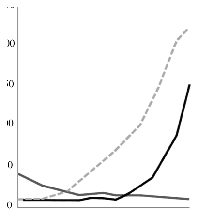
- （A）印第安人、白人、非裔
- （B）白人、非裔、印第安人
- （C）白人、印第安人、非裔
- （D）非裔、白人、印第安人
答案：（B）
詳解與考點
正解：圖中甲線由低處大幅增加並達最高，符合歐洲移民持續移入北美殖民地的白人人口；乙線起點低而後期上升，符合被輸入作為勞動力的非裔人口；丙線原本較多卻持續下降，符合受疫病與土地排擠衝擊的印第安人人口。因此甲、乙、丙依序為白人、非裔、印第安人，B 正確。
A：此項將甲、乙、丙依序配為印第安人、白人、非裔，與甲大增、丙下降的趨勢不合。
C：此項將乙配為印第安人，但印第安人人口不應呈現後期攀升的趨勢。
D：此項將甲配為非裔、丙配為印第安人；丙雖可對應印第安人，甲的最大增幅仍較符合白人移民。
本題考點：殖民地人口趨勢判讀——先以人口增減方向辨認族群，再用歷史背景驗證；白人移民增加、非裔勞動人口輸入增加、印第安人受殖民衝擊減少。
第 16 題
十九世紀末，一位英國議員批評清朝允許朝鮮與其他國家締結條約，有違國際慣例，但也指出：「若不採取此種方式，就無法引進外國勢力，以阻止清朝在朝鮮地區最害怕的兩個國家。」這兩個國家最可能是：
- （A）美國、日本
- （B）日本、俄國
- （C）俄國、英國
- （D）英國、美國
答案：（B）
詳解與考點
正解：題幹的關鍵是清朝藉朝鮮對外締約引進勢力，以制衡最擔憂的鄰近擴張國家。19 世紀末，日本勢力向朝鮮半島擴張，俄國亦有南下企圖，故日本、俄國最符合，B 正確。
A：美國雖與朝鮮締約，但不是清廷在朝鮮最主要欲制衡的兩個鄰近強權。
C：英國在東亞有勢力，但題意所指的兩國是日本與俄國，不是英國。
D：英國、美國皆非當時在朝鮮半島直接競逐最強的日俄組合。
本題考點：清末東亞國際關係——朝鮮問題的主要競逐者為日本與俄國；判讀列強關係時，須結合其地緣位置與擴張方向。
第 17 題
宋元時期，中國船隻出海必須取得市舶司發給以漢字書寫的「公憑」，是記載貨物相關內容的出海執照，也是東亞各港口驗證商船的依據。明朝實施海禁，琉球在明朝的封貢秩序下，進行與東亞、東南亞各國間的中轉貿易。琉球國王以漢字咨文（外交文書）與暹羅等國往來，琉球負責貢舶貿易的官員也以漢字文書與舊港（印尼蘇門答臘東部）的華人領袖聯繫。根據上文，下列哪個推論最合理？
- （A）中國政府強制貿易必須使用漢字
- （B）各國商人認為使用漢字難以竄改
- （C）東亞港口長期通行漢字已為定例
- （D）東亞港口的官員及商人均為華人
答案：（C）
詳解與考點
正解：宋元商船以漢字公憑供東亞港口驗證，明代琉球又以漢字咨文與暹羅及舊港往來；不同時期、不同地點皆使用漢字，最合理的推論是漢字長期在東亞港口通行並成為慣例，C 正確。
A：材料只顯示中國公憑及琉球外交文書使用漢字，不能推論中國政府強制所有貿易一律使用漢字。
B：材料未說明漢字因難以竄改而被採用，屬無證據的原因推測。
D：使用漢字不表示港口官員與商人全都是華人；琉球與暹羅的例子正說明漢字可跨族群使用。
本題考點：史料推論——由多地、多時期皆使用同一書寫系統，推得其為跨區域通行慣例；不可把使用文字過度推論成政府強制或使用者的族群身分。
第 18 題
南方區域的某國，有項人口指標一直維持在高點。該國人口數雖持續增加，但因戰亂不斷，經濟並未對應成長，失業率高達 3 成，人口轉型也大致停留在特定階段。文中的指標最可能為下列何者？
- （A）出生率
- （B）死亡率
- （C）移出率
- （D）移入率
答案：（A）
詳解與考點
正解：題幹同時指出人口持續增加、經濟未對應成長，且人口轉型尚未完成；在四項指標中，出生率維持高點最能同時對應人口增加與人口轉型脈絡。A：高出生率會推升人口自然增加，故 A 為正解。
B：死亡率維持高點會壓低人口自然增加，與題幹的人口持續增加不相符，B 錯誤。
C：移出率高會使該國人口減少，不能解釋題幹所述的人口持續增加，C 錯誤。
D：移入率高雖可能增加人口，卻不是人口轉型模型用來判斷階段的核心指標，D 錯誤。
本題考點：人口轉型與人口變動——題幹若同時提及人口轉型與人口持續增加，應優先以出生率、死亡率解讀自然增加，不以遷移率取代。
第 19 題
某地過往是廈門至鹿耳門舟船往來的必經要道，貿易興盛，但農業生產一直不佳。時至今日，基本的糧食供應也多仰賴外地，有時受限天候不佳，如颱風船隻停航即無法載送。造成該地上述農業生產特色的主要環境原因，最可能包括下列何者？甲、熔岩台地地勢低平，使水氣攔截不易乙、農作物的生長季，恰逢風勢最強季節丙、沼澤密布使排水受阻，不利作物生長丁、日照時數長，蒸發強烈，易缺水嚴重
- （A）甲乙
- （B）甲丁
- （C）乙丙
- （D）丙丁
答案：（B）
詳解與考點
正解：題幹的廈門至鹿耳門航線、糧食仰賴外運與颱風停航，指向澎湖；關鍵是澎湖的熔岩台地與缺水條件。B：甲為熔岩台地地勢低平、缺乏高山攔截水氣，降雨不易；丁為日照時數長、蒸發強烈，容易嚴重缺水，兩者最直接解釋農業生產不佳，故 B 為正解。
A：乙所述冬春東北季風強勁，且與部分農作物生長季重疊，確會影響農業；但本題問主要環境原因時，乙未如丁直接說明水分收支失衡，故甲乙不是官方答案組合。
C：乙雖與強風有關，丙的沼澤密布卻不是澎湖的主要地形特徵。
D：丙錯在將澎湖判為沼澤密布，故即使丁正確，組合仍錯。
本題考點：區域地理環境判讀——先由航線與外運糧食辨識澎湖，再以低平熔岩台地難攔截水氣、日照長蒸發強兩項解釋缺水與農業不利；冬春強勁東北季風也會影響農作，但組合選擇題仍要逐一核對題幹所問的主要原因。
第 20 題
2024 年，日本、美國與鄰近孟加拉灣及其所屬大洋的其他國家，於前述的大洋進行聯合軍事演習，希望透過強化重要夥伴關係，以維護自由開放的亞太地區。上述與日、美進行聯合軍演的國家，最可能為下列何者？
- （A）印度、菲律賓
- （B）紐西蘭、菲律賓
- （C）印度、澳大利亞
- （D）紐西蘭、澳大利亞
答案：（C）
詳解與考點
正解：題幹以孟加拉灣及其所屬大洋為線索，須找與該海域相鄰、且符合自由開放印太合作脈絡的國家。C：印度臨孟加拉灣，澳大利亞位於印度洋區域，最符合日、美與周邊夥伴進行聯合軍演的地理條件，故 C 為正解。
A：菲律賓主要臨太平洋與南海，非孟加拉灣周邊，A 錯誤。
B：紐西蘭與菲律賓皆非孟加拉灣周邊國家，B 錯誤。
D：紐西蘭不在孟加拉灣及印度洋周邊，D 錯誤。
本題考點：印太地緣政治——先由孟加拉灣定位印度，再由所屬印度洋辨認區域夥伴；時事地理判讀——國際軍演題須同時核對海域位置與合作國家的區域關係。
第 21 題
某人想在交通幹道附近尋找開設飲料店的理想店址，他先利用地理資訊系統以交通幹道兩側 200 公尺內的待租店面為條件進行分析並選取。下列哪項進一步的查詢，最可能使用與上述相同的 GIS 分析功能？
- （A）店面所在鄉鎮市的消費人口數
- （B）店址所在的土地使用分區類別
- （C）店家至周圍公園最短距離路線
- （D）周圍特定距離內的飲料店數量
答案：（D）
詳解與考點
正解：先以交通幹道兩側 200 公尺選取待租店面，是以指定距離畫出範圍的緩衝區分析。D：查詢周圍特定距離內的飲料店數量，同樣先建立距離緩衝區再計數，功能相同。
A：查人口數是屬性查詢。
B：查土地使用分區是套疊或屬性判讀。
C：求最短距離路線是網路分析。
本題考點：GIS 緩衝區分析——以道路、店址等地物為中心，設定固定距離範圍進行篩選或統計；功能辨析——人口與分區重在屬性或疊圖，最短路徑重在網路。
第 22 題
「日治時期，為了支援製糖會社的發展，臺灣總督府協助會社興建『糖業鐵道』，以利農場運送甘蔗至糖廠，製糖後輸往海外。1990 年代開始，部分農場土地釋出，提供科學園區或相關產業使用；其他農場儘管仍維持農業使用，但轉為栽種毛豆等經濟價值較高的作物外銷，部分糖業鐵道也轉型為觀光使用。」僅依題文資訊，上文最可能是下列哪個研究的摘要？
- （A）糖業發展與國際貿易關係之研究
- （B）糖業專業分工與產品標準化之研究
- （C）經濟全球化與糖業地景變遷之研究
- （D）知識經濟下糖業產業系統轉變之研究
答案：（C）
詳解與考點
正解：題幹按時間描述日治時期糖業鐵道運輸與外銷，再寫 1990 年代農場土地轉供科學園區、改種毛豆外銷，以及糖業鐵道轉型觀光；關鍵是產業結構改變如何連動土地、運輸與景觀，最符合經濟全球化下的糖業地景變遷。C 為正解。
A：糖業發展與國際貿易關係只能涵蓋甘蔗、糖與毛豆外銷，無法完整解釋農地轉為科學園區及鐵道轉觀光的地景變化。
B：糖業專業分工與產品標準化著重生產流程與產品規格，題文重點卻是土地利用、作物與鐵道功能的轉型。
D：知識經濟下糖業產業系統轉變應聚焦知識、研發或高科技產業機制；題文雖提到科學園區，主軸仍是糖業相關地景隨經濟全球化而改變。它看起來對，是因為題文出現科學園區，但單一土地用途轉換不足以把全文主題界定為知識經濟。
本題考點：研究摘要判讀——先找文本反覆呈現的核心變項，再選能涵蓋全部材料的研究題目；經濟全球化與地景——外銷作物、產業用地與觀光鐵道的轉型，可反映產業結構變動下的地景變遷；選項範圍比較——僅能解釋部分資料的題目，不如能統整時間、空間與產業變化者適當。
第 23 題
1980 年以前，泰國透過減稅促使日本公司與當地企業合作組裝汽車；1990 年代後，曼谷北側許多汽車相關產業在此設廠，從零組件到整車都可以完成，因而吸引國際大廠至此投資，銷往東協各國的日系車輛大多由泰國生產。依據題文，1990 年代泰國汽車產業的發展特色，最適合用下列哪個概念解釋？
- （A）進口替代
- （B）工業慣性
- （C）聚集經濟
- （D）產品生命週期
答案：（C）
詳解與考點
正解：題幹描述曼谷北側從汽車零組件到整車製造都能完成，完整供應鏈集中後吸引國際大廠投資，關鍵在於同類與相關產業集中所帶來的成本降低與規模效益。C：此種現象最適合以「聚集經濟」解釋，故 C 為正解。
A：進口替代是以國內生產取代進口，題幹明示其發展主要在1980年以前，非1990年代後完整產業鏈形成的解釋，A 錯誤。
B：工業慣性指產業因既有設備、勞工或市場等因素留在原地，題文重點是供應鏈聚集吸引新投資，B 錯誤。
D：產品生命週期可用於說明生產因產品成熟而移往低成本地區，但題文未描述產品階段轉移，而是區內產業集聚，D 錯誤。它看起來對，是因為日系車輛在泰國生產可能讓人聯想到海外移轉，但判斷依據應是零組件至整車集中所形成的區位效益。
本題考點：產業區位理論——相關產業與供應鏈集中，能共享勞動、市場、技術與運輸條件並降低成本，即為聚集經濟；年代判讀——題幹若區分不同時期，須將概念對應到指定時段的現象。
第 24 題
照片 1 是猶加敦半島上被水淹沒的洞穴，洞穴之間彼此相連，發展出特殊的潛水活動（如照片 1 中央的潛水人）。該地景發育的作用力，與臺灣下列哪種地形的成因最相似？照片1
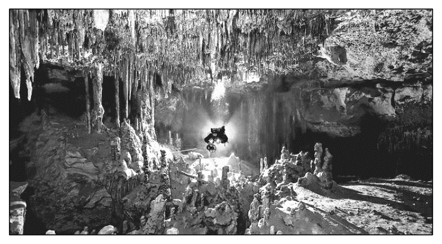
- （A）澎湖西嶼的柱狀節理地形
- （B）屏東墾丁公園的溶蝕地形
- （C）臺東長濱沿岸的海蝕地形
- （D）東沙潟湖外圍的環礁地形
答案：（B）
詳解與考點
正解：照片中的猶加敦半島洞穴彼此相連且被水淹沒，關鍵是地下水對石灰岩的溶蝕，洞頂崩塌後形成積水的天然井，屬喀斯特溶蝕地形。B 的屏東墾丁公園同有石灰岩溶蝕地形，成因最相似，故 B 為正解。
A：澎湖西嶼柱狀節理由火山岩冷卻收縮形成，不是溶蝕。
C：臺東長濱沿岸海蝕地形主要由海浪侵蝕形成，作用力不同。
D：東沙環礁由珊瑚礁生長與堆積形成，屬生物堆積地形。
本題考點：地形營力判讀——石灰岩洞穴、天然井指向地下水溶蝕；柱狀節理看火山冷卻、海蝕地形看海浪侵蝕、環礁看珊瑚堆積。
第 25 題
某人想要了解美國休士頓都會區的都市發展歷程，因此蒐集 2000 年與 2013 年該都會區的人口資料，並繪製成不同年度都會區的人口分布統計圖（圖 2）。該圖最適合以下列哪個地理概念解釋？
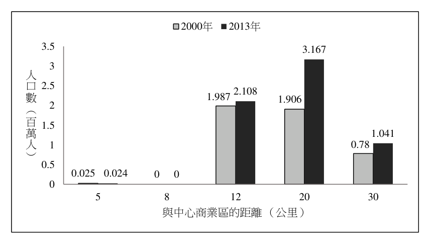
- （A）都市化
- （B）都市計畫
- （C）都市成長
- （D）都市機能
答案：（A）
詳解與考點
正解：圖中 2000 年到 2013 年的人口增加主要出現在距中心商業區 20、30 公里的外圍，關鍵是人口向郊區擴散的空間變化。A：都市化過程可呈現都市範圍向外擴張、郊區人口增加的現象，故 A 為正解。
B：都市計畫是政府對土地與都市發展的規劃行為；圖只呈現人口分布改變，未提供規劃措施，B 錯誤。
C：都市成長偏重都市人口或規模的總量增加；本圖要辨識的是人口由中心向外圍擴散的分布型態，C 錯誤。它看起來對，是因為外圍人口確有增加，但未抓到與中心商業區距離一同呈現的郊區化特徵。
D：都市機能指商業、住宅、工業等功能分區；圖未比較各區功能，D 錯誤。
本題考點：都市化與郊區化——比較不同年度、距中心商業區不同距離的人口，若外圍人口增加較明顯，即判讀為都市向外擴張；地理概念辨析——人口空間分布不等於都市計畫、都市總量成長或功能分區。
第 26 題
「循環經濟」強調資源能夠循環再利用，以減少廢棄物，例如將使用過的資源，重新導入新的產業系統，朝向永續經營。下述何種做法，最符合上述概念？
- （A）將清理好的漁網尼龍紗再製成為環保購物袋
- （B）尖峰時間實行汽車共乘來降低塞車與排碳量
- （C）企業群聚共享必要的基礎建設並強化產業鏈
- （D）降低生活的消費與生產來減少對環境的傷害
答案：（A）
詳解與考點
正解：題幹明示「將使用過的資源，重新導入新的產業系統」，關鍵是廢棄資源是否經再製而回到產品循環。A：將清理好的漁網尼龍紗再製成環保購物袋，是把使用過的材料轉化為新產品，符合循環經濟，故 A 為正解。
B：汽車共乘可減少塞車與排碳，屬節能減碳措施，並未使廢棄資源回到產業系統，B 錯誤。
C：企業群聚共享基礎建設、強化產業鏈，屬工業生態或產業合作，題幹未顯示廢棄物再製循環，C 錯誤。它看起來對，是因為企業共享資源也有永續效果，但共享設施不等於將已使用的材料再製。
D：降低消費與生產可減少環境傷害，屬源頭減量，沒有呈現資源再利用的循環流程，D 錯誤。
本題考點：循環經濟——使用後資源經回收、再製並重新進入產品或產業系統，即符合循環；節能減碳、資源共享與源頭減量雖有環保效益，不能取代再利用的判準。
第 27 題
全球各殖民地在獨立後，有些殖民地成為富國，有些卻深陷貧窮。對此，某書指出「北美、澳紐等地區，原為人口相對稀少且技術較落後，被殖民後，經濟快速成長。中南美洲人口相對密集，但被殖民後，到近代卻發展遲緩。」該書從體制、自然環境、人口密度與人口移動等角度，解釋上述殖民地獨立後呈現經濟發展不均的現象。下列何者最能解釋該書的說法？
- （A）英國法制較注重個人財產權，有助繼承制度的北美與澳紐人民勇於投資
- （B）西、葡種植咖啡需大量資金，使得中南美洲的此類栽培業擁有較多企業
- （C）黃熱病、瘧疾容易導致死亡，因而屬於熱帶氣候區的殖民地較缺乏勞力
- （D）古文明地區環境負載力較低，促使地處於古文明的殖民地發展較為遲緩
答案：（A）
詳解與考點
正解：題幹以北美、澳紐與中南美洲的殖民經驗對比，關鍵是從「體制」解釋獨立後的經濟發展不均。A 指出英國法制較重視個人財產權，北美與澳紐繼承此制度後，人民較能安心投資，因而促進經濟成長，最能對應題文，故 A 為正解。
B：西、葡殖民下的中南美洲以掠奪式種植制度為主，其問題在於財產權與政治經濟體制不利廣泛投資；「擁有較多企業」也不能說明其近代發展遲緩，B 錯誤。
C：黃熱病與瘧疾屬自然環境因素，但選項把熱帶殖民地概括為「較缺乏勞力」，無法解釋題幹比較的核心體制差異，C 錯誤。
D：古文明地區並非因環境負載力較低而發展遲緩；題幹所述中南美洲的差異重點也不是古文明所在地，而是殖民體制及其後果，D 錯誤。它看起來對，是因為題幹提到自然環境與人口密度，但這些因素不能取代財產權制度對投資誘因的解釋。
本題考點：殖民地經濟發展差異——比較殖民地時，從財產權是否受保障、制度是否鼓勵投資判斷長期發展；因果對應——選項須同時能說明北美澳紐成長與中南美洲遲緩，才符合題幹的比較架構。
第 28 題
2024 年，伊朗與俄羅斯長期支持的敘利亞政府垮台。而該國政府垮台的原因之一，實際上與許多國家暗中資助敘利亞境內的反政府勢力聯盟有關，沙烏地阿拉伯即是其中一員。沙國支持上述聯盟的原因，最可能與下列何者有關？
- （A）敘利亞在底格里斯河上游興建水庫，將可能導致沙國水資源供應嚴重不足
- （B）敘利亞在波斯灣發現豐富石油蘊藏，沙國對國際石油價格的掌控優勢降低
- （C）沙國與什葉派的伊朗政權存在對立，不願伊朗介入敘利亞政治以擴大勢力
- （D）沙國境內庫德族長期追求獨立建國，擔心分離主義導致王室政權遭受挑戰
答案：（C）
詳解與考點
正解：題幹的關鍵是伊朗長期支持敘利亞政府，而沙烏地阿拉伯資助反政府勢力。沙國由遜尼派主導，與什葉派伊朗長期對立，不願伊朗藉介入敘利亞擴張勢力，C 最能說明，故選 C。
A：底格里斯河流域的水資源議題與沙烏地阿拉伯沒有直接的上下游關係。
B：敘利亞不在波斯灣，且不是以豐富石油足以挑戰沙國油價影響力的國家。
D：庫德族分離問題主要涉及土耳其、伊拉克、敘利亞與伊朗，不能作為沙國支持反政府聯盟的主要理由。
本題考點：中東地緣政治——判讀代理衝突時，先辨識支持各方的宗派與區域勢力競逐；沙烏地阿拉伯與伊朗的對立，常與遜尼派、什葉派及勢力範圍競爭相連。
第 29 題
根據〈諭閩粵民人〉所述，族群衝突的起因應與下列何者有關？
- （A）朱一貴事件係因為閩粵械鬥而起，故事件後閩粵族群關係緊張
- （B）事件時粵籍移民協助官府鎮壓朱一貴，導致閩粵族群關係緊張
- （C）事件後官府厲行渡臺禁令，粵籍移民僅能偷渡來臺故多有衝突
- （D）事件後官府劃設番界，卻無力約束界外不同族群私墾者的衝突
答案：（B）
詳解與考點
正解：題幹以朱一貴事件後的〈諭閩粵民人〉為線索，關鍵詞是「各釋前怨」與後來縣志所補出的漳、泉、海豐、三陽等閩粵群體；須回扣事件中各群體的政治立場。B：朱一貴事件時，粵籍客家人協助清廷鎮壓，戰後閩粵群體因此結怨，能說明文告要求雙方息前怨、敦新好的原因，故 B 為正解。
A：朱一貴事件不是因閩粵械鬥而起，不能把事件起因倒置為閩粵衝突，A 錯誤。
C：渡臺禁令與粵籍移民偷渡不是文告所指的前怨來源，且不能直接解釋朱一貴事件後的閩粵緊張，C 錯誤。
D：劃設番界主要涉及漢人與原住民族的土地開墾界線，與文告所處理的閩粵群體衝突不合，D 錯誤。它看起來對，是因為私墾確會引發資源競爭，但題幹具體指向的是事件後閩粵群體的結怨。
本題考點：清代臺灣族群關係——先辨識材料中的群體名稱與衝突時間，再連結其在事件中的政治立場；史料因果判讀——文告中的「前怨」須由同時期、同群體的具體歷史事件解釋，不能以其他類型的土地衝突代替。
第 30 題
《重修鳳山縣志》內容提及的「客民」，並未包括海豐、三陽，且將這兩個族群與漳、泉並列，由此判斷當時人最可能是以何種方式來區別族群？
- （A）省籍區別
- （B）來臺先後
- （C）血緣宗族
- （D）語言習俗
答案：（D）
詳解與考點
正解：題幹將海豐、三陽與漳、泉並列，且「客民」未包括海豐、三陽；同一省分的人仍被區分，關鍵必在語言與習俗差異。D：當時人最可能以語言習俗區別族群，故為正解。
A：海豐、三陽同屬廣東省，若只按省籍無法說明為何不列入「客民」。
B：文中沒有來臺先後的資訊，不能據此判斷。
C：文中未提及血緣或宗族關係，不能作為分類依據。
本題考點：歷史材料判讀——比較材料中的分類與排除對象，找出能解釋分類差異的變項；省籍相同而仍被另列時，應進一步考慮語言、習俗等文化特徵。
第 31 題
根據題文，下列何者最能解釋新加坡華人的移入？
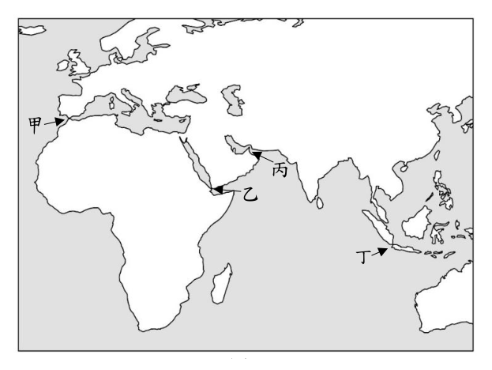
- （A）作為殖民地行政首府，可創造市場區位優勢
- （B）栽種技術領先，形塑絕對利益增加勞動供給
- （C）華人的草原耕作技術，有利當地栽培業發展
- （D）運輸成本降低活絡貿易，帶來更多勞動需求
答案：（D）
詳解與考點
正解：題文的蘇伊士運河開通降低西歐至東亞的運輸成本，並使貿易與熱帶栽培業擴張，觸發勞動需求增加的遷移機制。D：運輸成本降低活絡貿易，進而帶來更多勞動需求，最能解釋華人移入新加坡，故 D 為正解。
A：殖民地行政首府雖可能形成市場，但題文的直接因果重點是交通成本下降與貿易擴張，A 錯誤。
B：栽種技術領先與絕對利益不能說明題文所述的勞動需求來源，B 錯誤。
C：華人的草原耕作技術與東南亞熱帶栽培業不符，C 錯誤。
本題考點：交通革新與人口遷移——運輸成本下降可擴大市場與貿易，產業擴張再提高勞動需求並吸引移民；解釋遷移時要連結題文中的交通變化、產業活動與就業機會。
第 32 題
根據題文，歐洲人建立西歐與東亞新航路後，影響歐洲各國國際貿易甚劇。若從英國出發到東亞，僅以航線距離來思考，圖 3 中哪個海峽，在新航路開通後的通道價值，可能降低最多？
- （A）甲
- （B）乙
- （C）丙
- （D）丁
答案：（D）
詳解與考點
正解：題幹以 19 世紀蘇伊士運河開通為關鍵，英國前往東亞可由地中海進入紅海，再經曼德海峽與麻六甲海峽，無須再繞行非洲南端。D：丁為巽他海峽，舊航線繞過好望角進入印度洋後可能經此通往東亞；蘇伊士運河開通後，這條繞遠路徑的通道價值降低最多，故 D 正確。
A：甲為直布羅陀海峽，是英國船隻進入地中海、再前往蘇伊士運河的入口，通道價值反而重要，A 錯誤。
B：乙為曼德海峽，連接紅海與亞丁灣，新航路由蘇伊士運河進入紅海後仍須通過，B 錯誤。
C：丙為荷莫茲海峽，位於波斯灣出口，英國至東亞的新航路並不以通過此處為必要，不能說它是開通後降低最多者，C 錯誤。它看起來對，是因為荷莫茲也是重要海峽，但判斷重點是英國至東亞的航線是否因蘇伊士運河而改道。
本題考點：航線變遷與海峽價值——比較運河開通前後的最短航線，遭新航線繞過的海峽價值會降低；蘇伊士運河航線判準——西歐至東亞改走地中海、紅海與印度洋，不再必須繞好望角。
第 33 題
題文中臺灣民眾所發起的政治抗爭活動，最主要的訴求為何？
- （A）由殖民政府遴選議員組成臺灣議會，審查總督發布之律令以防止專斷
- （B）由臺灣民眾選舉民意代表，至日本帝國議會參與臺灣相關法案的審議
- （C）在臺灣成立議會，由民選議員行使與臺灣相關的法案與預算之審議權
- （D）由議會通過臺灣加入日本決議，爭取與日本本土國民相同的政治權利
答案：（C）
詳解與考點
正解：題文直接說明「臺灣議會設置請願運動」，其核心是要求在臺灣建立由民意代表參與的議會，審議臺灣事務。C：在臺灣成立議會，由民選議員行使與臺灣相關法案及預算的審議權，符合運動的主要訴求，故 C 為正解。
A：由殖民政府遴選議員不具民選性，且題幹訴求不是僅審查總督律令。
B：到日本帝國議會審議臺灣法案，與在臺灣設置地方議會的訴求不同。
D：臺灣加入日本的決議並非運動所求，且不能取代設置本地議會的主張。
本題考點：臺灣議會設置請願運動——主張在臺灣設置議會，由民選議員審議法案與預算；歷史訴求判讀——辨識「本地議會、民選、審議權」三項核心，區分殖民政府任命與赴中央議會參政。
第 34 題
根據題文，下列有關日治臺灣法治運作與人民權利的分析與評論，何者最為適切？
- （A）臺灣人民不滿政府禁止結社的處分，但無法向司法機關請求救濟
- （B）日治臺灣司法聽命於行政權，可見司法獨立規範未被施行於臺灣
- （C）臺灣為殖民地，日本憲法有關人民權利保障只有原母國人民享有
- （D）臺灣議會期成同盟會籌組失敗，顯示日治時期臺灣人民無結社權
答案：（A）
詳解與考點
正解：題文的關鍵句是人民不服警察禁止結社的處分卻「投訴無門」，且統治者未將行政救濟制度施行於臺灣。A 指出人民無法向司法機關請求救濟，正合題文，故 A 為正解。
B：一審法院判決被告全數無罪，顯示法院對檢方起訴並非照單全收，仍有依法審判的空間，不能說司法完全聽命行政。
C：題文只說行政救濟制度未施行於臺灣，沒有證明日本憲法人民權利保障僅限日本本土人民。
D：期成同盟會此次遭警察制止，不等於日治時期臺灣人民完全沒有結社權；「無」的結論過度絕對。
本題考點：日治臺灣法治與人民權利——評論須扣住題文證據；見「投訴無門」可判斷救濟管道受限，但一審無罪則不能推論司法毫無獨立審判空間。
第 35 題
題文中提到的產業風險，最可能包括下列何者？
- （A）西南氣流帶來豪雨，導致土石流災害頻仍
- （B）梅雨季若降水有限，易使潟湖海水量減少
- （C）東北季風風速過強，大浪常造成礁石崩落
- （D）颱風引發強風暴雨，潮間帶環境易受侵襲
答案：（D）
詳解與考點
正解：題幹問養蚵產業的風險，關鍵是養蚵場位於潮間帶，最需判斷能直接侵襲海岸與潮間帶環境的災害。D：颱風引發強風暴雨與風浪，容易破壞潮間帶養蚵環境、影響收成，故 D 為正解。
A：土石流主要發生在坡地與山區，並非西南沿海潮間帶養蚵的主要產業風險，A 錯誤。
B：梅雨季降水有限不必然使潟湖海水量減少，且題幹所問是養蚵場直接面對的高風險災害，B 錯誤。
C：東北季風可能造成風浪，但「礁石崩落」不是養蚵業的主要風險機制；它看起來對，是因為強風確會影響海岸活動，但潮間帶養蚵更直接受颱風風暴雨與浪潮侵襲，C 錯誤。
本題考點：海岸產業與自然災害——潮間帶養殖易受強風、暴雨與風浪破壞；地理情境判準——先確認產業所在環境，再選會直接破壞其設施與生產條件的災害。
第 36 題
依據題文，該學者的主張最能凸顯社會規範的何種特性與作用？
- （A）會影響個人的自我認同，也決定資源分配
- （B）會因不同時空背景，形成各不相同的內涵
- （C）雖具穩定性，但受到挑戰時也會有所轉變
- （D）會框限個人追求，但並無法杜絕突破空間
答案：（D）
詳解與考點
正解：題幹關鍵在於青蚵嫂雖受「命運寄託於婚姻」的傳統規範框限，仍以剝蚵技能改善生活、展現主體性，正可判斷規範的限制並非毫無突破空間。D：社會規範會框限個人追求，卻無法杜絕個人於體制內創造改變的可能，符合學者主張，故 D 為正解。
A：題文未討論資源如何分配，也未以自我認同作為論證重點，A 錯誤。
B：題文重點不是不同時空使規範內涵改變，而是個人在既有規範下的行動空間，B 錯誤。
C：規範本身並未因青蚵嫂的行動而轉變；題文強調的是她們在規範內發揮主體性，C 錯誤。
本題考點：社會規範的作用——先辨認規範對個人的限制，再看題幹是否出現個人仍可行動、協商或突破的證據；規範穩定性與變遷——個人突破空間不等於規範內容已改變。
第 37 題
根據資料一，當時政府所推行的紡織業政策最可能為下列何者？
- （A）以美援購入原料發展代紡代織
- （B）增設新廠並擴大舊廠生產規模
- （C）用田賦徵實鼓勵農民轉種棉花
- （D）開放布料進口以刺激國內生產
答案：（A）
詳解與考點
正解：資料一的「進口布，不如進口紗；進口紗，不如進口棉花」指向由進口原料取代進口成品，並以保護、扶植政策發展國內紡織加工。A：以美援購入原料後代紡代織，正符合進口原棉、委由廠商加工的方向，故 A 為正解。
B：增設新廠、擴大舊廠是可能的產業措施，但資料一的關鍵是進口層級由布、紗降至棉花，不能據此直接判定為擴廠政策，B 錯誤。
C：資料所說的棉花是進口原料，並非以田賦徵實或鼓勵農民改種棉花，C 錯誤。
D：開放布料進口會增加成品競爭，與政府保護、扶植本土紡織加工的方向相反，D 錯誤。它看起來對，是因為同樣出現「進口」，但題幹比較的是由進口成品轉向進口原料。
本題考點：戰後臺灣紡織業政策——看到「進口布不如進口紗、進口紗不如進口棉花」，判斷為以進口原料供應國內代紡代織；產業保護判準——進口成品與扶植本土加工方向相反。
第 38 題
綜合上述三則資料判斷，下列何者最可能是該生探究學習的主題？
- （A）大稻埕紡織業的反吸與擴散分析
- （B）臺灣紡織業困境與產業轉型分析
- （C）亞洲地區紡織業的產業群聚分析
- （D）全球機能紡織業的市場需求分析
答案：（B）
詳解與考點
正解：資料一的「保護和扶植」說明戰後紡織業的奠基，資料二以 1988 年工廠外移、廉價布匹進口與供過於求呈現困境，資料三再寫老布莊轉向機能性布料出口；三則資料共同指向臺灣紡織業的困境與轉型，故 B 為正解。
A：資料雖提到大稻埕，但重點不只在單一地區的產業吸引或擴散，而是整個臺灣紡織業由興盛、受衝擊到調整經營的歷程，A 範圍過窄。
C：資料沒有比較亞洲各地的廠商集中情形或群聚條件，無從支持產業群聚分析，C 錯誤。
D：機能性布匹只是資料三中的轉型例子，資料並未探討全球市場需求，D 把個別策略擴大為未被資料支持的主題。它看起來對，是因為資料提到出口與機能布料，但主軸仍是臺灣紡織業的轉型過程。
本題考點：探究主題歸納——先依時間串連各則資料的共同主線，再選能同時涵蓋政策奠基、產業困境與轉型策略的題目；範圍判準——選項若只截取單一地點、單一面向或將資料未述內容擴大，即不合。
第 39 題
以下何者最適合用來描述圖 4 反映的國際情勢？
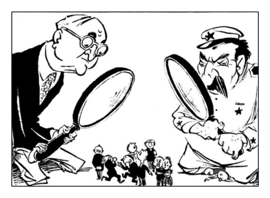
- （A）四國分占德國時期，兩位大人代表同盟國與軸心國，被壓制的是中歐
- （B）國際冷戰時期，兩位大人代表民主陣營與共產集團，被壓制的是東歐
- （C）殖民地解放時期，兩位大人代表美、蘇帝國主義，被壓制的是西南歐
- （D）西歐重建時期，兩位大人代表自由經濟與計畫經濟，被壓制的是北歐
答案：（B）
詳解與考點
正解：題幹明示漫畫完成於 1950 年，並以「第三力量」描繪夾在美蘇兩強之間的歐洲；此一時間與情境觸發冷戰兩大陣營的判讀。B：兩位大人分別代表民主陣營與共產集團，被壓制的小孩代表受蘇聯控制的東歐，符合政治漫畫意旨，故 B 為正解。
A：四國分占德國發生於二次世界大戰後初期，軸心國已戰敗，不能以同盟國與軸心國解釋 1950 年的美蘇對峙，A 錯誤。
C：漫畫所示是冷戰中的美蘇兩強對峙，不是殖民地解放脈絡；受壓制的也非西南歐，C 錯誤。
D：自由經濟與計畫經濟可概括制度差異，但漫畫對應的是具體的民主陣營與共產集團，且受蘇聯控制的是東歐而非北歐，D 錯誤。它看起來對，是因為冷戰確有自由經濟與計畫經濟的對比，但地理對應不符題圖。
本題考點：冷戰格局的政治漫畫判讀——先以年代鎖定二次世界大戰後的美蘇對峙，再以人物與地理位置辨認陣營；東歐判準——受蘇聯控制的東歐屬共產集團，不能誤置為北歐或西南歐。
第 40 題
依據上文，1950 年代法國提出的管理計畫，其規定所隱含的理念最適合以下列哪個概念說明？
- （A）核心邊陲
- （B）地緣樞紐
- （C）區域互賴
- （D）中地體系
答案：（C）
詳解與考點
正解：題幹的關鍵規定是六國共同管理煤、鋼資源，成員國間免關稅取得原料；這使各國經濟相互連結，應以區域互賴說明。C：區域互賴指同一區域的國家透過資源、貿易或制度合作形成相互依存關係；煤鋼共同體共享資源、互免關稅，正符合此概念，故 C 為正解。
A：核心邊陲強調核心地區對邊陲地區的支配與資源汲取，題幹描述的是成員國互惠合作，不符。它看起來對，是因為題文涉及資源與強權，但煤鋼共同體的安排是平等合作，不是支配關係。
B：地緣樞紐著重特定地點控制交通、戰略通道所產生的影響力；共同管理煤鋼與免關稅不是以樞紐位置為核心，B 錯誤。
D：中地體系用以描述介於不同世界或文明之間的中介性空間，無法直接說明六國資源共享與貿易合作，D 錯誤。
本題考點：區域整合——國家藉共同管理資源、降低貿易障礙建立制度化合作；概念判準——選項若強調成員間相互依存與互惠，對應區域互賴，若強調支配、戰略位置或文明中介，則不符。
第 41 題
依據上文，2004 年歐盟組織的變化，最可能對成員國帶來下列哪項影響？
- （A）開啟西歐國家使用歐元貨幣
- （B）擴大東歐國家產業資金來源
- （C）開放西歐國家免除簽證出境
- （D）穩定東歐國家石油能源輸出
答案：（B）
詳解與考點
正解：題幹的 2004 年歐盟組織變化是東擴，經濟相對弱勢的東歐國家加入後可進入單一市場並取得結構基金與區域發展補助。B：可擴大東歐國家產業資金來源，最符合。
A：西歐使用歐元早於 2004 年東擴，且入盟不必然採歐元。
C：申根並非所有歐盟成員入盟即自動適用，也不是僅限西歐的出境免簽。
D：石油能源輸出與東擴沒有必然關係。A、C 看起來都與歐洲整合有關，但歐元區與申根區的資格不等於歐盟會員資格。
本題考點：歐盟整合——東擴可透過市場整合與結構基金增加新會員的發展資源；制度區分——歐盟、歐元區與申根區的會員條件及生效時點不同。
第 42 題
依據題文資訊，下列何者最能詮釋英國與歐盟談判的主要目的？
- （A）處理英國與全球化發展交織的治理問題
- （B）確認英國與歐洲國家建立雙邊自由貿易
- （C）保障英國的本土文化不受全球化的衝擊
- （D）爭取英國得以繼續適用歐盟的移民政策
答案：（A）
詳解與考點
正解：題文點出英國脫歐後須就「移民、國際貿易、跨國金融」談判，這些都是跨越國界的全球化治理議題，因此 A 最能概括英國與全球化發展交織的治理問題，故 A 為正解。
B：雙邊自由貿易只是國際貿易中的一項安排，無法涵蓋移民與跨國金融，範圍過窄。它看起來對，是因為題文確實提到國際貿易，但題目問的是談判的主要目的。
C：本土文化保護不是題文列出的談判事項，不能由材料推出。
D：移民政策只是談判的一個面向，且英國脫歐正須重新協商與歐盟的關係，不能說繼續直接適用歐盟政策。
本題考點：全球化治理——材料同時出現移民、貿易、金融等跨境議題時，應以能整合多面向的治理問題為答案；選項範圍判準——題問主要目的時，僅涵蓋材料單一事項的選項通常不足以概括全文。
第 43 題
依據題文，該國政府採取哪個方法最有助於解決乙指出的問題？
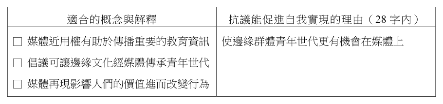
- （A）教育其國民瞭解AI潛藏的族群與性別偏頗
- （B）制定嚴格的法規以監管業者使用AI的範圍
- （C）發展本國資料庫以提供國際訓練AI的數據
- （D）監測及調查國際上AI出現歧視該國的頻率
答案：（C）
詳解與考點
正解：乙指出某國人民常被 AI 視為潛在恐怖分子，關鍵原因是訓練資料對該國形象不足或帶有負面偏頗。C：發展本國資料庫並提供較完整、正確的資料給國際 AI 訓練，能直接改善資料來源的偏頗，故 C 為正解。
A：教育國民認識偏頗只能提升察覺，不能改變 AI 的訓練資料，A 錯誤。
B：監管業者使用 AI 的範圍未必補足特定國家的資料缺口，B 錯誤。
D：監測與調查歧視頻率只能掌握現象，沒有矯正訓練資料，D 錯誤。
本題考點：對症下藥——先辨認問題根源是訓練資料偏頗，再選能改善資料代表性的措施；AI 偏誤——監測與教育有助因應，但不等於直接修正資料來源。
第 44 題
根據題文，丙對於以 AI為依據決定是否假釋的疑慮，最可能是基於下列哪一法律原則？
- （A）平等原則
- （B）比例原則
- （C）誠實信用原則
- （D）信賴保護原則
答案：（A）
詳解與考點
正解：丙指出 AI 將有色人種判定為較高再犯風險，可能使假釋決定產生族群差別待遇；關鍵是相同法律地位者不得因種族受不合理差別對待。A：平等原則要求國家作成處分時不得恣意差別待遇，故丙的疑慮最符合平等原則，A 為正解。
B：比例原則檢驗國家手段是否適合、必要且狹義相當於目的，本題核心不是手段與目的是否相稱，而是演算法可能造成族群歧視，B 錯誤。它看起來對，是因為假釋確涉及限制或回復人身自由的衡量，但題文特別指出的是有色人種被判為較高風險。
C：誠實信用原則重在權利行使與義務履行應誠實、不違反信賴，本題未涉及當事人間的誠信問題，C 錯誤。
D：信賴保護原則保障人民對行政機關具體表示或法秩序的正當信賴，本題沒有政府變更承諾或人民信賴受損的情形，D 錯誤。
本題考點：法律原則辨識——因種族、性別或其他身分造成不合理差別待遇，優先判斷為平等原則問題；比例原則則須聚焦手段與目的的相稱性，兩者不可混用。
第 45 題
根據題文，丁最可能建議政府採行何種政策？
- （A）開發綠能以支應AI廠商用電
- （B）對導入AI的廠商課徵碳稅
- （C）補貼水費以協助AI機房降溫
- （D）要求廠商外包AI運算系統
答案：（B）
詳解與考點
正解：丁指出 AI 耗電與耗水，並主張 AI 產品應反映其諸多問題；應以外部成本內部化處理。B 對導入 AI 的廠商課徵碳稅，可使環境成本進入業者成本，促使節能，故 B 為正解。
A：開發綠能可改善供電結構，卻未直接使 AI 使用者或廠商負擔其耗能外部成本，A 錯誤。
C：補貼水費會由社會吸收機房降溫成本，與讓產品反映成本相反，C 錯誤。
D：外包 AI 運算只改變運算由誰執行，未解決耗電、耗水的外部成本，D 錯誤。
本題考點：外部成本內部化——生產造成環境成本卻未反映於價格時，可透過碳稅使成本由造成者負擔；政策判讀——比較政策是否直接回應題幹指定的耗能與耗水問題。
第 46 題
甲的主張最適合以媒體作用的哪項相關概念解釋？為何抗議行動有助青年世代自我實現？請先勾選適合的概念與解釋，並依據勾選之解釋說明理由。（3 分，左欄勾選不正確，整題不計分；右欄未依據勾選項目寫出理由或僅抄錄題文，右欄不計分）
本題選項為上圖中的 A／B／C／D，請對照圖片作答。
標準答案未收錄
詳解與考點
考點：媒體再現。左欄應勾選「媒體再現影響人們的價值進而改變行為」。右欄理由示例（28字內）：媒體呈現多元科學家形象，使邊緣青年相信自己也能成為科學家而不放棄。陷阱：媒體近用權、文化傳承非本題抗議更換圖像的核心。（AI需查證）
第 47 題
根據題文，學生推動校園運動需要透過的公民權利類型，與下列哪項社會運動所藉助的權利類型最為接近？
- （A）反核團體透過靜坐抗議與集會遊行活動，要求政府正視廢核民意
- （B）代孕合法化的推動者接受政黨立委提名，透過政治參與爭取修法
- （C）西拉雅族正名運動，透過訴訟爭取被國家承認登記為平地原住民
- （D）環保團體提案透過公民投票方式來表達訴求，以求改正政府政策
答案：（A）
詳解與考點
正解：題幹的校園運動是透過組織社群、辦理活動來表達訴求，所行使的是集會結社自由。A 的靜坐抗議與集會遊行同樣屬此類權利，故 A 為正解。
B：接受政黨立委提名、透過政治參與爭取修法，核心是參政權，B 錯誤。
C：透過訴訟爭取身分登記，核心是訴訟救濟，C 錯誤。
D：以公民投票改正政策，核心是創制複決權，D 錯誤。它看起來對，是因為同樣都在表達公共訴求，但公投的制度權利不同於集會結社自由。
本題考點：公民權利類型比對——先辨認行動手段，再配對權利；集會結社自由——以集會、遊行、組織團體表達公共訴求；參政、訴訟、公投分別不可與集會結社混同。
第 48 題
根據題文，學生建立社群的主要目的，最可能為下列何者？
- （A）保存快要被消滅和流失的原住民文化
- （B）矯正和補償過去曾發生的歷史不正義
- （C）要求國家政策平等尊重原住民族文化
- （D）凝聚原住民族群體身分肯認與行動力
答案：（D）
詳解與考點
正解：學生說主流社會否定其存在、需要能「看見彼此、相互共鳴」的社群，並要一起打造未來；關鍵是透過社群凝聚共同身分與行動能力。D 的凝聚原住民族群體身分肯認與行動力，最貼合題文，故 D 為正解。
A：題文未以保存瀕臨消失的文化為建立社群的主要目的，A 錯誤。
B：殖民迫害是前段背景，但學生直接表達的目標不是要求矯正或補償歷史不正義，B 錯誤。它看起來對，是因為題文確實敘及屠殺與迫害；但作答須回到學生建立校園社群時說出的目的。
C：題文未提出要求國家制定政策，重點是社群內的相互看見與共鳴，C 錯誤。
本題考點：認同政治——當群體在主流社會中被否定或不可見時，可藉社群建立身分肯認與集體行動力；閱讀理解判準——區分歷史背景與題目所問的直接行動目的，優先依人物明示訴求判斷。
第 49 題
依據題文，英軍對佩柯特平民從不攻擊轉為屠殺，下列哪項解釋觀點最能說明其立場變化？請先在左欄勾選觀點，並在右欄寫出題文中的關鍵證據。（3 分，左欄未作答或作答錯誤，右欄不計分）
標準答案未收錄
詳解與考點
考點：主權地位。英軍原依國與國交戰規則待之、不攻平民，後將佩柯特人視為叛亂者而屠殺，是否定其對等的主權地位（勾選「否定主權地位」）。關鍵證據（25字內）：將佩柯特人視為叛亂者，推翻國與國交戰規則。（AI需查證）
第 50 題
根據題文，我們如何理解資料二史家評述的觀點？
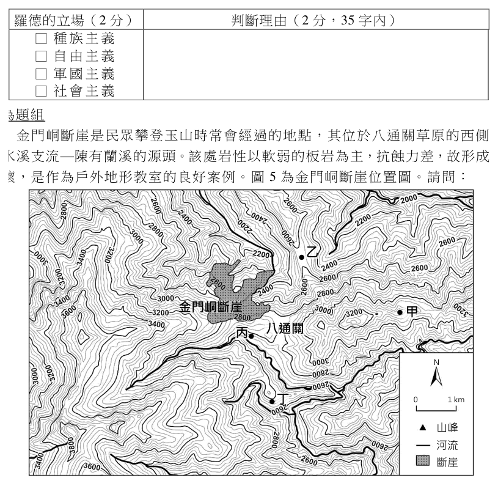
- （A）反對帝國主義
- （B）實踐民族自決
- （C）支持廢除黑奴制度
- （D）反映西方中心主義
答案：（D）
詳解與考點
正解：羅德宣稱英國為「最優秀的種族」、殖民擴張對人類有益，而史家又將他比作華盛頓、林肯加以稱頌。D：此評述以西方殖民者的成就作尺度，忽略被殖民者處境，反映西方中心主義，故 D 為正解。
A：羅德是帝國主義擴張的推手，資料二並未反對帝國主義。
B：民族自決強調民族自行決定政治地位，與羅德主張英國統治他地相反。
C：資料未討論廢除黑奴制度，羅德的殖民理念也不能據此推論為支持廢奴。
本題考點：帝國主義史觀批判——將殖民擴張者塑造成普世英雄，且以殖民國利益評價歷史，即是西方中心主義；判讀時要比對人物自述的種族優越與殖民主張。
第 51 題
根據題文，資料三的抗議行動，最可能是批判羅德的何種立場？請在答題卷勾選一個正確選項，並說明判斷理由。（4 分）
本題選項為上圖中的 A／B／C／D，請對照圖片作答。
標準答案未收錄
詳解與考點
考點：資料一中羅德明確主張英國人是「最優秀種族」，擴張領土對人類有益，為典型種族主義論述。資料三「羅德必須倒下」抗議即批判其種族主義立場。判斷理由：題文引述羅德稱英國人為世界最優秀種族，主張將劣等種族土地納入英國影響。常見陷阱：誤選軍國主義，羅德論述重點在種族優劣而非軍事擴張。【AI 整理需查證】
第 52 題
若要在圖 5 設立一處展望金門峒斷崖的觀景台，在圖中的哪個點位展望最佳？
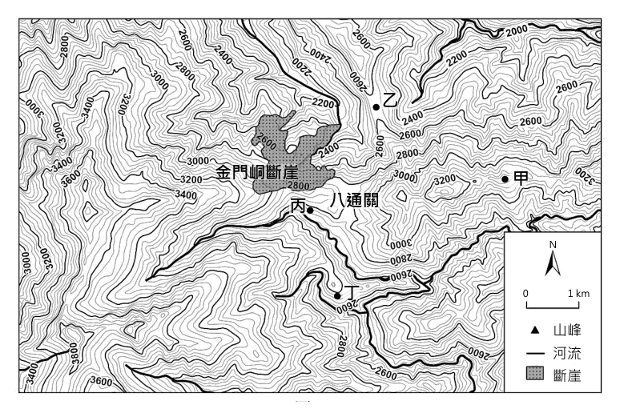
- （A）甲
- （B）乙
- （C）丙
- （D）丁
答案：（B）
詳解與考點
正解：本題要從圖5判斷展望金門峒斷崖的最佳點位，判準是連結觀測點與目標崖面，檢查視線是否通暢，而非只比較海拔高低。官方答案為 B（乙）；目前題檔未保留圖5的等高線與點位位置，因此不補述乙與斷崖間的具體地形關係。
A、C、D：甲、丙、丁均非官方答案；各點展望較差的具體原因，須回到圖5逐一檢查觀測點至斷崖的視線是否受到地形遮蔽，不能由目前文字資料斷定各點受哪一道稜線阻隔。
本題考點：地形圖視域判讀——連結觀測點與目標地，沿線檢查地勢起伏與遮蔽物；最佳觀景點的判準是目標方向與視線通暢度，不等同於海拔最高。
第 53 題
請在答題卷的地圖上，以圖例符號標示出玉山主峰位置。（3 分）
本題選項為上圖中的 A／B／C／D，請對照圖片作答。
標準答案未收錄
詳解與考點
考點：等高線判主峰。玉山主峰為全圖最高點，應標在等高線數值最大、密集環繞的封閉高地（約圖中3600公尺以上稜峰）處，並以山峰圖例標示。提醒：勿標在斷崖或八通關鞍部等較低處。（AI需查證）
第 54 題
根據題文，大租權廢除對於日資企業在臺購地投資興業，最直接的影響為何？
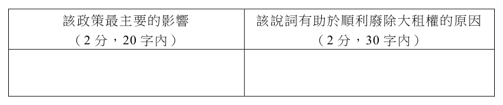
- （A）降低外部成本
- （B）增加外部成本
- （C）降低交易成本
- （D）增加交易成本
答案：（C）
詳解與考點
正解：題幹指出廢除大租權後由一田多主改為一田一主，關鍵效果是產權明確，購地不必同時與多方權利人協商。C：日資企業可減少資訊蒐集、談判與確認權利的成本，最直接是降低交易成本，故 C 為正解。
A：外部成本是污染等由第三人承擔的成本，非本題產權交易的協商成本。
B：產權明確不會增加外部成本，且外部成本並非最直接影響。
D：一田一主減少權利關係與協商對象，應降低而非增加交易成本。
本題考點：產權與交易成本——產權界定清楚可減少資訊蒐集、協商及履約確認成本；概念區分——交易成本發生於交換過程，外部成本則是未經市場價格反映而由第三人承受的影響。
第 55 題
題文中清代大租戶對土地所擁有的支配力，相較於今日的土地所有權，哪方面的所有權內涵最可能受到限制？請先勾選一項受限的權利內涵，並摘述相關題文作為佐證。（3 分，左欄勾選錯誤或未作答，右欄不計分）
本題選項為上圖中的 A／B／C／D，請對照圖片作答。
標準答案未收錄
詳解與考點
考點：清代大租制中，小租戶買賣土地不需大租戶同意，但大租戶對土地用途無法決定（劉銘傳語），且大、小租可分開交易，顯示大租戶對土地的「處分權」受到限制——無法自由處置、決定土地用途。佐證：題文指大租戶「無法決定土地用途」且小租買賣不需大租戶同意。常見陷阱：誤選收益權，大租戶仍可在遠方收租，收益未被完全剝奪。【AI 整理需查證】
第 56 題
根據題文，「減四留六」政策使小租戶變成官府認定的業主，從政府管理的角度，其最主要的影響為何？為什麼總督府提出的說詞有助於順利廢除大租權？（4 分）該政策最主要的影響該說詞有助於順利廢除大租權的原因（2 分，20 字內）（2 分，30 字內）
本題選項為上圖中的 A／B／C／D，請對照圖片作答。
標準答案未收錄
詳解與考點
考點：「減四留六」使小租戶成為官府認定業主，最主要影響是田賦徵收對象明確化，有利政府稅收管理（一田一主、稅源穩定）。總督府說詞（稱此為劉氏妥協）有助廢除大租權，因可讓大租戶認為清代已承認其損失而接受補償，降低抵抗。常見陷阱：把說詞效果混淆為政策本身效果；政策主要影響在於稅收管理，非農業生產。【AI 整理需查證】
第 57 題
根據題文，成功培育改造的番茄，對番茄糊市場供需變動的直接影響，與下列哪個商品的市場變動情況最類似？
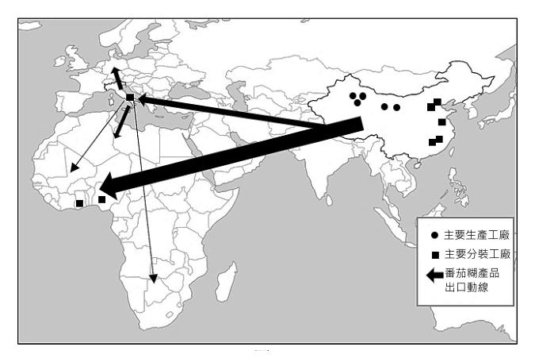
- （A）品種改良後的水梨深受消費者喜愛
- （B）政府採補貼政策鼓勵香蕉擴大栽種
- （C）颱風肆虐令西瓜受損嚴重無法到貨
- （D）民眾擔心基改草莓會帶來未知危害
答案：（B）
詳解與考點
正解：題幹的改造番茄使種植與番茄糊生產限制降低、產量增加、成本下降，直接造成番茄糊供給增加，供給線右移。B：政府補貼鼓勵香蕉擴大栽種，同樣使生產者願意供給更多，最為類似。
A：水梨深受消費者喜愛，是需求增加，不是供給增加。
C：颱風使西瓜受損無法到貨，是供給減少，方向相反。
D：民眾擔心基改草莓危害，影響的是消費意願，屬需求面變動。它看起來對，是因為同樣提到基因改造，但市場變動要看改變的是生產條件還是消費偏好。
本題考點：供需變動——生產技術改善、成本下降、補貼擴產會使供給增加；消費者偏好改變影響需求，天然災害造成供給減少，須先辨識變動來源再判斷曲線方向。
第 58 題
根據題文，勾選一項該加工產業最主要呈現的連鎖關係（2 分），並從圖 6 所呈現的產品與原料關係說明判斷的依據。（30 字內，勾選與說明需配對才給分，3 分）
本題選項為上圖中的 A／B／C／D，請對照圖片作答。
標準答案未收錄
詳解與考點
考產業連鎖，答垂直分工。依圖6，番茄糊先由主要生產工廠製出，再運往他國的主要分裝工廠調味分裝，最後出口到消費市場；同一商品的不同加工階段分屬不同國家專責，屬跨國垂直分工。陷阱：垂直整合是同一企業掌控上下游，此處為分屬不同廠商。
第 59 題
根據題文與圖 7，當時該國的農耕模式，為其帶來可觀的利潤。此模式得以取得利潤的原因，與下列哪種企業經營的獲利方式最為接近？
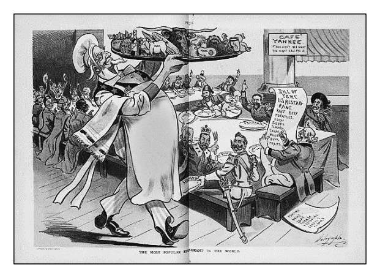
- （A）利用溫室的溫度控管進行園藝作物精緻栽培，並創立品牌在網路進行銷售
- （B）以原有石雕技術為基礎，進口低價石材加工，並嘗試轉型以符合市場需求
- （C）超市增加麵包、咖啡、飯盒等商品販售數量，並持續增加其他的服務項目
- （D）企業將外勤部門工作委由薪資較低地區承包，並透過網路聯繫以確保時效
答案：（C）
詳解與考點
正解：題幹的美國農耕模式以機械化帶動大量、多樣化生產，並把農畜產品供應全球；獲利核心是規模與銷量。C 的超市增加商品販售數量並增加服務項目，最接近以量大、多樣取利的方式，故為正解。
A：溫室精緻栽培與品牌網路銷售著重高附加價值，不是機械化大量生產。
B：進口低價石材再加工、轉型迎合市場，重點在成本與加工轉型，非規模量產。
D：將外勤工作委由低薪地區承包，是藉外包降低成本，並非增加產量與供應規模。
本題考點：經營模式類比——先抓取題幹的獲利來源；機械化農業的關鍵是大量、多樣供應與規模經濟，不等同品牌溢價、加工轉型或外包降成本。
第 60 題
根據圖 7 呈現的二十世紀初期美國農畜業狀況，下列何者最能反映當時美國的訴求？
- （A）提倡門羅主義
- （B）建立關稅壁壘
- （C）劃分勢力範圍
- （D）推行自由貿易
答案：（D）
詳解與考點
正解：漫畫以「世界上最知名的餐廳」呈現各國爭相購買美國農畜產品，關鍵是大量機械化生產後必須拓展海外市場，因此訴求開放市場的自由貿易。D 最符合，故為正解。
A：門羅主義著重美洲事務不受歐洲干預，並非促進農產品外銷的經濟政策。
B：建立關稅壁壘會提高貿易障礙，不利各國購買美國農畜產品，與漫畫旨趣相反。它看起來對，是因為保護關稅也能維護本國產業，但本題強調的是外銷需求。
C：劃分勢力範圍是帝國主義的政治控制方式，非開放農產品市場的直接訴求。
本題考點：歷史漫畫判讀——從畫面中的商品流向與角色需求判斷政策目的；大量生產需擴大海外銷路時，對應自由貿易而非關稅壁壘。
第 61 題
在其他條件不變下，題文中的貿易發生後，對美國農畜市場的均衡價格與數量有什麼樣的影響？該市場的生產者剩餘會有何變化？請在左欄先寫出對價格與數量的影響（2 分），再於右欄寫下生產者剩餘的變化（1 分）。（左欄錯誤或未作答，右欄不計分）對價格與數量的影響（10 字內）生產者剩餘的變化（5 字內）
本題選項為上圖中的 A／B／C／D，請對照圖片作答。
標準答案未收錄
詳解與考點
考國際貿易對出口國的影響。美國農畜為出口國，貿易後增加對外銷售：均衡價格上升、數量增加；生產者以較高價賣出更多，故生產者剩餘增加。陷阱：勿把出口國誤當進口國而判價跌；出口使國內供需缺口由外需填補，造成價量同升。
第 62 題
從現代社會安全制度設立的角度來看，題文中因應災變的福利措施，雖與現今社會救助制度非常類似，但二者有重要差異。下列何項敘述最足以說明其差異？
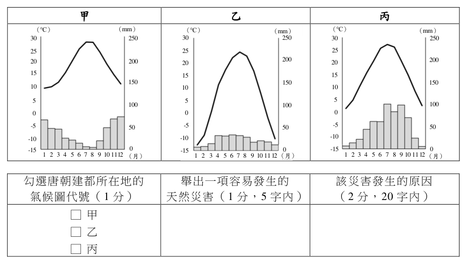
- （A）前者強調基於悲憫動機，後者基於保障公民權
- （B）前者為解決災害問題，後者則為解決貧窮問題
- （C）前者針對受災戶提供資源，後者針對所有公民
- （D）前者由政府與民間發動，後者由第三部門主導
答案：（A）
詳解與考點
正解：題幹對照唐朝官府「愛民如子」而施粥、給藥，與現代社會救助制度的設立原則；前者以統治者的悲憫與施恩為出發點，後者以保障公民權利為制度基礎。A 最能說明兩者的根本差異，故 A 為正解。
B：唐朝的施粥、給藥可回應災害造成的飢餓與疾病，現代社會救助也能處理貧窮或緊急需求；兩者差異不在於各自只解決一種問題。
C：現代社會救助不是針對所有公民普遍發放，而是以有生活困難或符合資格的需要者為對象。
D：現代社會救助以政府制度為主，民間與第三部門可以協力，但不是由第三部門主導。它看起來對，是因為題幹也提到民間加入施恩救苦，容易誤以為現代制度的主體已轉為民間。
本題考點：社會救助的制度理念——傳統慈善以悲憫、施恩為出發點，現代社會救助以保障公民基本權為基礎；社會救助的對象——依資格協助有需要者，不是全體公民；福利供給主體——現代制度由政府主導，民間可補充協力。
第 63 題
不考慮長期氣候變遷的情況下，在答題卷中勾選一個最可能是唐朝建都所在地的氣候圖代號，並且以氣候的角度，分析該地容易發生的一項天然災害，並說明該災害發生的原因。（4 分）
本題選項為上圖中的 A／B／C／D，請對照圖片作答。
標準答案未收錄
詳解與考點
考溫雨圖判讀。唐都長安（今西安）位關中平原，1 月均溫約 0°C、7 月約 27°C，年降水約 500～750 mm 且明顯集中夏季，屬「溫帶（暖溫帶）季風氣候」。三圖比較：乙圖冬季低達約 −13°C、年溫差極大，屬更內陸的溫帶大陸性類型，過於嚴寒，不合長安；甲圖冬季仍逾 5°C 偏暖，亦不符；丙圖冬季僅約 0～2°C、夏季炎熱、降水集中夏季（6～9 月為高峰、冬季乾燥），最符長安特徵。故先勾選的氣候圖代號為「丙」。災害與成因（任一即可）：（1）旱災——年降水量偏少且季節與年際變率大，夏季以外降水稀少，易致缺水乾旱；（2）洪患——降水集中夏季、常以暴雨形式降下，短時逕流暴增易釀洪災。對應正解：丙。
第 64 題
題文中對唐朝安史亂後的敘述，最能反映出何種歷史發展趨勢或變化？請在答題卷上勾選一個正確選項，並說明判斷依據。（4 分）
本題選項為上圖中的 A／B／C／D，請對照圖片作答。
標準答案未收錄
詳解與考點
考點：安史亂後北方藩鎮割據、人口南移，中央財賦改仰賴大運河輸送江南糧食，江南開發帶來穩定稅收，反映「經濟重心南移」趨勢。判斷依據：題文明述中央愈加仰賴江南稅收與大運河糧食，北方農業難以復原。常見陷阱：誤選「政治重心南移」，唐朝建都長安未遷，政治中心並未南移。【AI 整理需查證】
其他年度
回到學科能力測驗社會的年度總覽，
或到學科能力測驗題庫首頁看其他科目。
題目與標準答案出自大考中心 學測歷年試題（依著作權法 §9，考試試題不受著作權保護）。依中華民國《著作權法》第 9 條第 1 項第 5 款，
依法令舉行之各類考試試題不得為著作權之標的，得自由利用。詳解為 AI 整理的學習輔助，
並非官方標準答案；中華民國會修訂，引用前請對照現行版本查證。